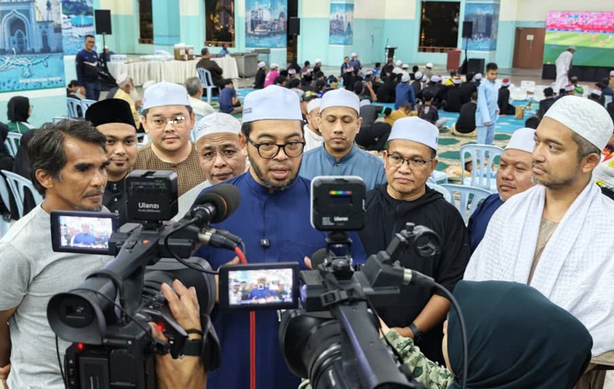
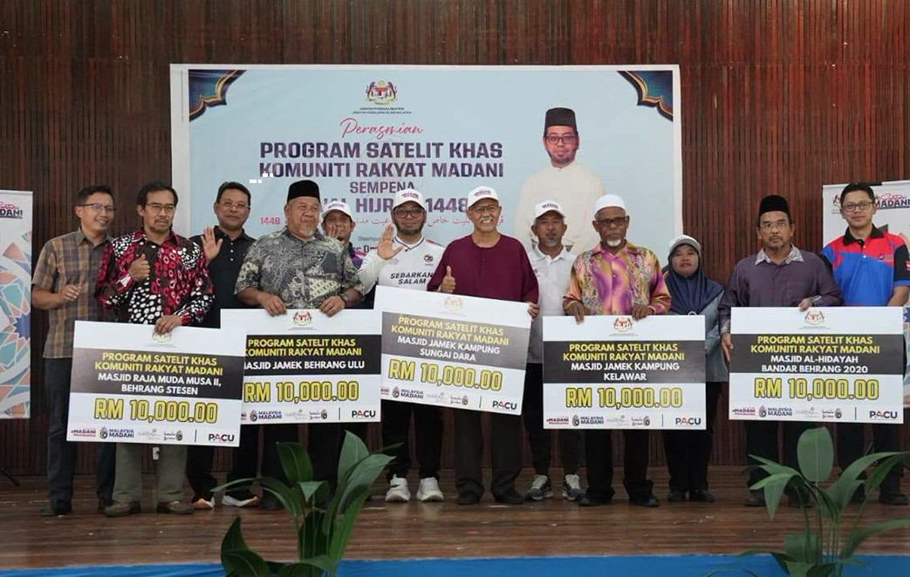
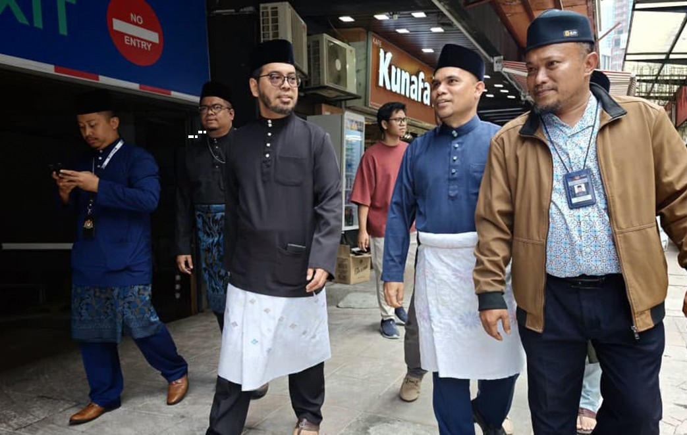
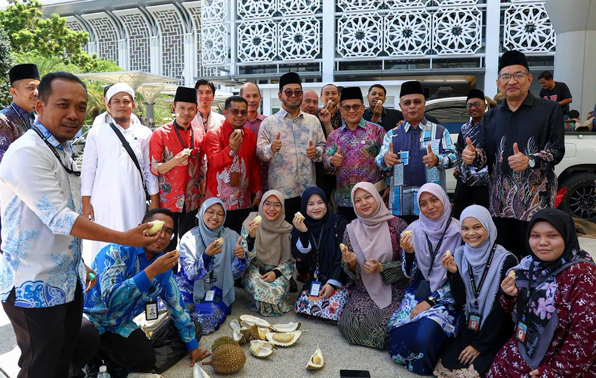

Yang Berhormat Senator Dr.
Zulkifli Hasan
ذوالكفل حسن
SAVE CONTACTBusines Focus :
Minister in the Prime Minister's Department – ( Religious Affairs )
- Incumbent – Assumed office 17 December 2025
- Monarch – Ibrahim Iskandar
- Prime Minister – Anwar Ibrahim
- Deputy – Marhamah Rosli
- Preceded by – Mohd Na'im Mokhtar
- Constituency – Senator
Deputy Minister in the Prime Minister's Department – ( Religious Affairs )
- In office – 12 December 2023 – 17 December 2025
- Monarchs – Abdullah (2024), Ibrahim Iskandar (2024 – 2025)
- Prime Minister – Anwar Ibrahim
- Minister – Mohd Na'im Mokhtar
- Preceded by – Ahmad Marzuk Shaary
- Succeeded by – Marhamah Rosli
- Constituency – Senator
Senator Appointed by the Yang di-Pertuan Agong
- Incumbent – Assumed office 12 December 2023
- Monarchs – Abdullah (2023–2024), Ibrahim Iskandar (since 2024)
- Prime Minister – Anwar Ibrahim
- Minister – Mohd Na'im Mokhtar
Personal details
- Born – Zulkifli bin Hasan, 3 June 1977 (age 48), Tanjong Malim, Perak, Malaysia
- Party – Independent
- Profession – Academic




Contact :
Phone – 0388707040
Email – zulkifli.hasan@jpm.gov.my